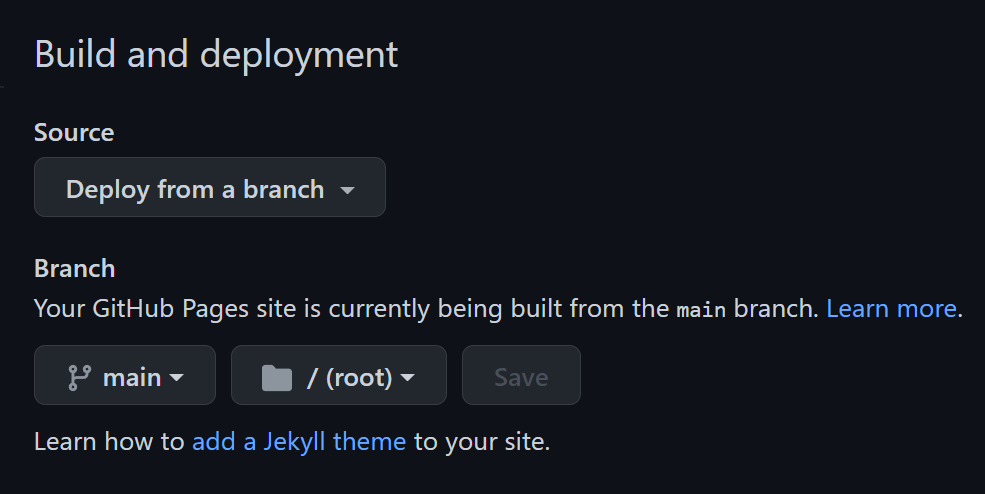

Hugo blog site github local repo sync
Hugo Local Setup
Testing hugo blog site github
- Create two repositories
- blog –> public
- local-devnull-hub.io –> public
-
Clone blog local git or create with
hugo new- git clone http://localhost/user/blog.git
- cd to blog
- Create new
hugo new site blog-local-devnull.io - new empty site dire
blog-local-devnull.io - Choose themes
-
Installation theme
From project’s root directory, run:
git clone https://github.com/vimux/mainroad.git themes/mainroad
Or, if not planning to make any significant changes but want to track and update the theme, add it as a git submodule via the following command:
git submodule add https://github.com/vimux/mainroad.git themes/mainroad
Specify mainroad as default theme in the config.toml file.
theme = "mainroad"
Change baseurl needs to be changed baseurl = "https://github.com/devnull-hub/devnull.io"
Note: Make sure to end baseurl with a
/
- Preview site locally
- run
hugo server
Watching for config changes in C:\..\..\blog\blog-local-devnull.io\config.toml
Environment: "development"
Serving pages from memory
Running in Fast Render Mode. For full rebuilds on change: hugo server --disableFastRender
Web Server is available at http://localhost:1313/ (bind address 127.0.0.1)
- New Posts
hugo new posts/POST_NAME.mdlabel
- blog repo - used for storing the code
- produciton repo - were we deploy from
In production repo need to make sure have one commit and main branch.
- Production repo setup
If README.md not added to remote repo then complete following or just add submodule
git clone https://github.com/devnull-hub/devnull.io
cd local-devnull-hub.io
git checkout -b main
add README.md
git add .
git commit -m "adding readme.md"
git push origin main
- Add submodule to blog
Deploying from the public folder.
Submodule
git submodule add -b main https://github.com/devnull-hub/devnull.github.io.git public
- Generate static files
Run for the theme used mainroad
hugo -t mainroad
Inside public dir now item have been published.
├───categories
├───css
├───js
├───page
│ └───1
├───posts
│ └───mypost
├───series
└───tags
Remote repo has been added.
git remote -v
origin http://localhost/user/local-devnull-hub.io.git (fetch)
origin http://localhost/user/local-devnull-hub.io.git (push)
Commit changes to production
cd public
git add .
git commit -m "init commit"
git push origin main
GitHub Pages
Make sure Branch main /root is selected.
